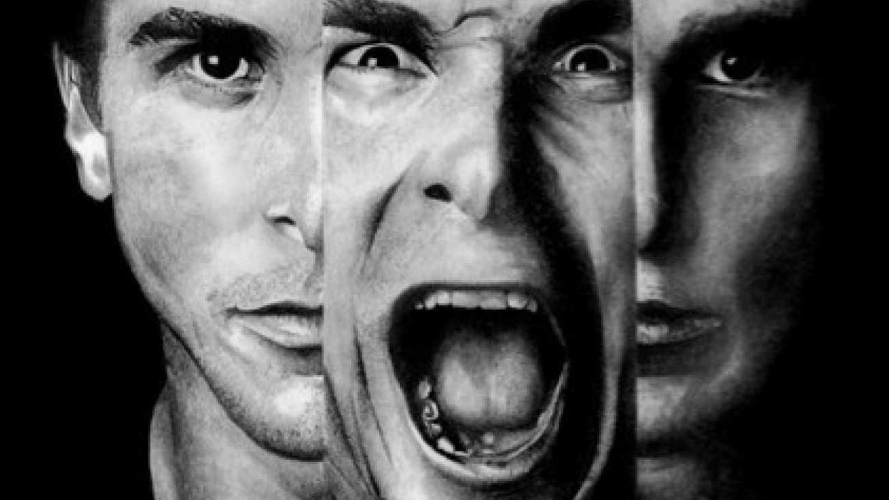

Schizophrénie
Les troubles anxieux sont des conditions psychologiques qui se manifestent par une peur excessive et persistante, souvent sans raison apparente. Ces troubles peuvent perturber la vie quotidienne d'une personne, affectant ses relations sociales, son travail, et son bien-être général. Ils incluent divers types, chacun ayant ses propres caractéristiques et modes de traitement.
Voici les principaux types de troubles d'anxiété :
Anxiété chronique et excessive, persistante pendant au moins 6 mois, sans cause précise.
sortes:
Apparaît sans autre trouble associé.
Lié à une autre pathologie (dépression, maladie chronique).
Thérapie cognitivo-comportementale (TCC)
Anxiolytiques ou Antidépresseurs (ISRS).
Gestion du stress
Hygiène de vie
Soutien psychologique précoce
Apparition soudaine et répétée de crises de panique (peur intense sans danger réel).
sortes:
Peur d’avoir une crise dans un lieu où il serait difficile de fuir.
les crises surviennent indépendamment du lieu.
Thérapie cognitivo-comportementale (TCC)
Anxiolytiques ou Antidépresseurs (ISRS).
Respiration contrôlée
Relaxation
Reconnaître les signes précoces
Eviter les stimulants
Techniques de relaxation
Peur intense et persistante d’être jugé ou humilié dans des situations sociales.
sortes:
Anxiété dans toutes les situations sociales.
Anxiété dans certaines situations (parler en public, manger devant les autres).
Thérapie cognitivo-comportementale (TCC)
Anxiolytiques ou Antidépresseurs (ISRS).
Bêtabloquants avant situations ciblées.
Exposition graduelle
Développement des compétences sociales.
Présence d’obsessions (pensées intrusives) et/ou de compulsions (actes répétitifs pour soulager l’angoisse).
sortes:
Vérifier en boucle (portes, gaz, etc.)
Peur de la contamination, lavage excessif.
Besoin que tout soit « parfait ».
Ruminations internes, compulsions mentales invisibles
Thérapie cognitivo-comportementale (TCC:exposition avec prévention de la réponse)
Anxiolytiques ou Antidépresseurs (ISRS:fluoxétine, sertraline).
Thérapies spécialisées.
Repérage précoce
Techniques de gestion de stress
Soutien psychoéducatif

La schizophrénie est un trouble mental grave qui perturbe la pensée, les émotions, et les comportements d'une personne. Elle est caractérisée par des symptômes tels que des hallucinations, des délires, des pensées désorganisées, et des troubles du comportement. La schizophrénie se divise en plusieurs types ou sous-catégories, en fonction des symptômes qui dominent chez le patient. Bien que le Diagnostic and Statistical Manual of Mental Disorders (DSM-5) ne fasse plus de classification stricte en types spécifiques de schizophrénie, il existe différentes formes de la maladie, qui peuvent être observées en fonction des symptômes prédominants.
Voici les principales formes de la schizophrénie:
Forme la plus fréquente. Dominée par des idées délirantes de persécution et des hallucinations auditives.
Antipsychotiques
psychothérapie
parfois hospitalisation
Suivi psychiatrique précoce
éviter l’isolement
bonne observance du traitement
Marquée par une pensée et un comportement désorganisés, souvent absurde ou incohérent
Antipsychotiques
réhabilitation psychosociale
thérapies structurantes.
Diagnostic précoce
environnement structurant
suivi psychothérapeutique
Forme rare caractérisée par des troubles moteurs
Antipsychotiques
benzodiazépines
parfois ECT (électroconvulsivothérapie).
Diagnostic précoce
environnement structurant
suivi psychothérapeutique
Forme discrète, sans délires ni hallucinations marquées, mais avec un retrait progressif de la vie sociale
Psychothérapie
réinsertion sociale
médicaments si nécessaire
Soutien social fort
suivi précoce dès les signes de désengagement
Les troubles de la personnalité sont des conditions psychologiques qui affectent de manière durable et persistante la manière dont une personne pense, ressent, se comporte et interagit avec les autres. Ces troubles se manifestent généralement par des schémas de pensée et de comportement rigides, inadaptés et déconnectés des normes sociales. Ils peuvent entraîner des difficultés majeures dans les relations interpersonnelles, le travail et d'autres aspects de la vie quotidienne.
Les troubles de la personnalité sont classés en trois grands groupes : les groupes A, B, et C.
Les personnes dans ce groupe semblent détachées de la réalité, méfiantes ou étranges dans leur manière de penser et d’agir.
Méfiance excessive envers les autres, soupçons injustifiés
Détachement social, absence d’émotions visibles.
Incongruité des pensées, des perceptions et des comportements, difficultés relationnelles
thérapie individuelle, parfois anxiolytiques
psychothérapie de soutien, techniques comportementales
antipsychotiques légers
éducation émotionnelle, éviter l’isolement
repérage précoce dans l’enfance, stimulation sociale
encadrement familial, thérapie précoce
Besoin excessif d’attention, comportement théâtral, superficialité..
Mépris des normes, manque d’empathie, manipulation
Instabilité affective et relationnelle, impulsivité
Incongruité des pensées, des perceptions et des comportements, difficultés relationnelles
Sens grandiose de sa propre importance, besoin d’admiration, manque d’empathie
très difficile — TCC, prise en charge judiciaire
thérapie dialectique comportementale (TDC), antidépresseurs
thérapie analytique
éducation précoce, encadrement strict dès l’enfance
soutien émotionnel, repérage des traumatismes
éducation à l’authenticité émotionnelle.
développer l’estime de soi équilibrée dès l’enfance.
Ces personnes montrent une peur excessive, de l’inhibition, ou une besoin obsessionnel de contrôle
Peur intense du rejet, hypersensibilité à la critique, évitement social.
Besoin excessif d’être pris en charge, soumission.
Perfectionnisme, besoin de contrôle mental et interpersonnel.
TCC + exercices d’exposition
thérapie d’affirmation de soi, ISRS parfois
thérapie psychodynamique ou TCC
soutien social, développement de l’estime de soi
encouragement à l’autonomie dès l’adolescence
éducation à l’authenticité émotionnelle.
éducation à la flexibilité, acceptation de l’imperfection.

Les troubles du comportement alimentaire (TCA) sont des pathologies mentales caractérisées par une relation perturbée, souvent obsessionnelle et dysfonctionnelle, avec la nourriture, le poids, l’image corporelle et l’acte de s’alimenter. Ils traduisent souvent un profond mal-être psychologique, une mauvaise estime de soi ou une difficulté à gérer ses émotions autrement qu’à travers l’alimentation. Les TCA peuvent toucher les enfants, les adolescents comme les adultes, et concernent aussi bien les femmes que les hommes, bien que les femmes soient plus souvent diagnostiquées.
Types de troubles alimentaires :
Refus de maintenir un poids normal par peur intense de grossir
🧩 Formes :
La personne ne mange quasiment pas, ne fait pas de crises de boulimie ni de purge. Elle contrôle strictement tout : calories, poids, etc. Mode "contrôle total".
Elle restreint, mais parfois craque et fait des crises de boulimie, suivies de vomissements, usage de laxatifs ou sport à l’extrême. C’est une alternance douleur-culpabilité.
Thérapie cognitive-comportementale (TCC)
Soutien nutritionnel
Hospitalisation dans les cas graves
Éducation à l'image corporelle
Soutien psychologique précoce
Crises incontrôlables de bouffe suivies de comportements compensatoires
🧩 Formes :
Après les crises alimentaires, la personne se fait vomir ou prend des laxatifs/diurétiques pour "se débarrasser" de ce qu’elle a mangé.
Pas de vomissements, mais des comportements compensatoires excessifs : jeûne sévère ensuite ou activité physique intense pour brûler ce qu’elle a mangé.
Thérapie cognitive-comportementale (TCC)
Médicaments (ex. ISRS)
Groupes de soutien
Education émotionnelle
Valorisation de l’estime de soi
Mêmes crises de boulimie mais sans comportement compensatoire
🧩 Pas vraiment de sous-types officiels, mais on observe :
crises peu fréquentes (moins d’une fois par semaine), mais régulières.
crises très fréquentes (plusieurs fois par semaine), avec prise de poids rapide.
Thérapie cognitive-comportementale (TCC)
Médicaments (ex. lisdexamfétamine)
Thérapies de pleine conscience
Encourager des habitudes alimentaires saines
Travail sur les émotions
Ingestion persistante de choses non comestibles (craie, terre, cheveux...)
🧩 Formes selon ce qui est ingéré :
ingestion de terre, argile
ingestion compulsive de glace
consommation d’amidon brut
ingestion de cheveux (peut mener à un "trichobézoard", une masse dans l'estomac)
ingestion de matières fécales (rare et souvent associée à un trouble psychiatrique sévère)
Évaluation médicale (carences en fer ou zinc)
Thérapie comportementale
Environnement sécurisé
Détection précoce chez les enfants
Éducation parentale
Dépistage des carences
Régurgitation volontaire d’aliments re-mâchés puis ré-ingérés ou recraché.
🧩 Formes selon le contexte :
chez les bébés entre 3 et 12 mois. L’enfant régurgite souvent, même sans reflux gastro-œsophagien.
souvent lié à un stress intense, des troubles autistiques ou des carences affectives
Incongruité des pensées, des perceptions et des comportements, difficultés relationnelles
souvent dans un contexte de troubles neurodéveloppementaux (comme le trouble du spectre autistique)
Thérapie comportementale
Suivi nutritionnel
Traitement des causes sous-jacentes
Surveillance précoce des comportements alimentaires
Stimulation psychomotrice chez les enfants